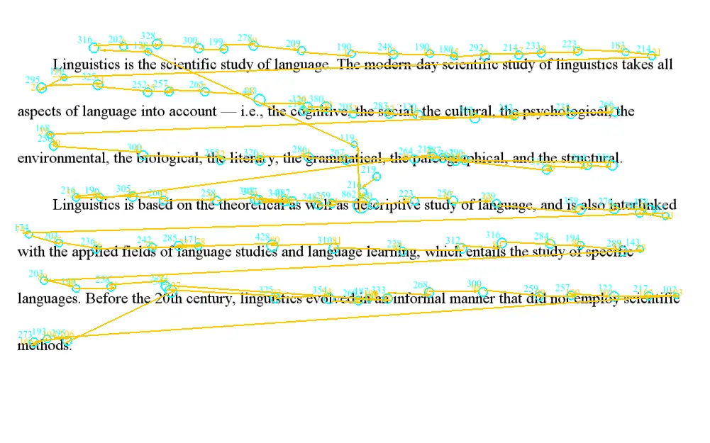
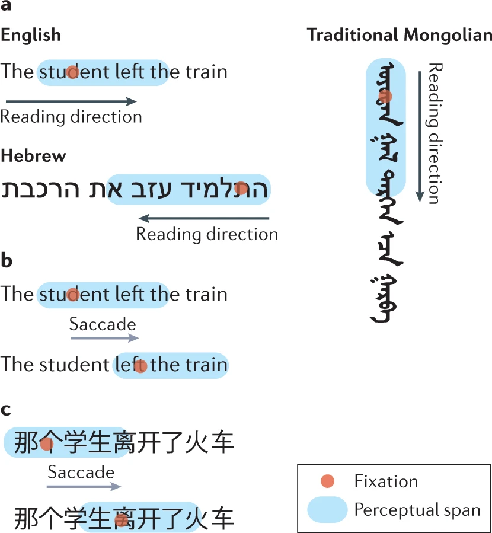
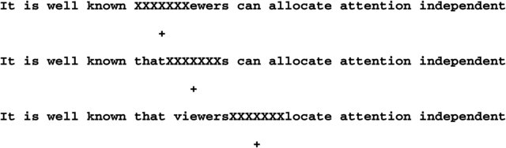
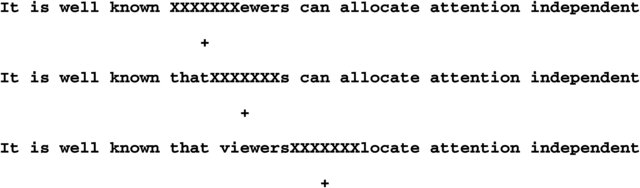
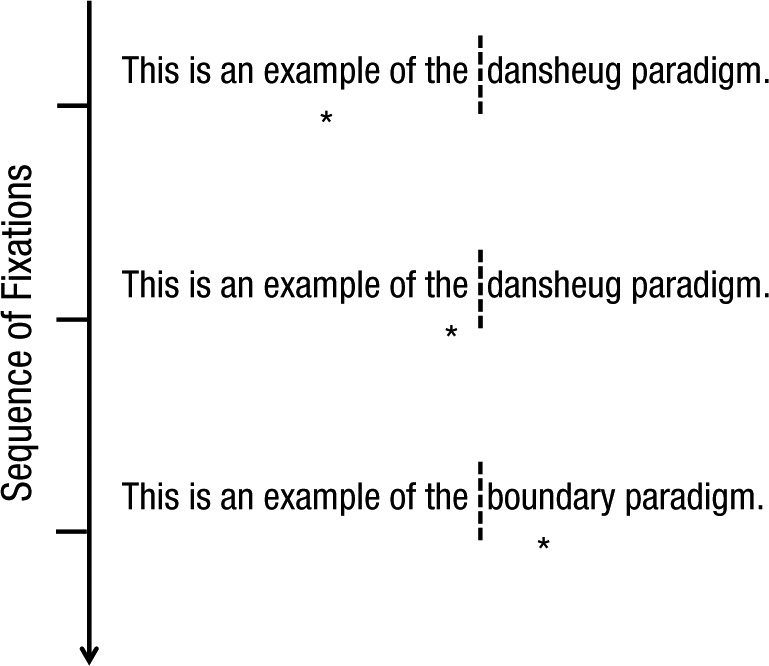

Today's roadmap
- Eye movements in reading: fundamental characteristics
- Word processing during reading
- Sentence processing during reading
Eve movements in reading
Eve movements in reading
- Mean fixation duration: 200-250ms
- Mean saccade length: 7-9 letters
- Saccade length in reading is relatively unaffected by the retinal size of the text
- 10-15% of saccades are regressive
- Return sweep from the end of line to the beginning of the next line
- Individual difference in fixation duration and saccade length
Effect of orthography

Word processing during reading
Word processing during reading
Experimental paradigms
- Gaze-contingency paradigms
Experimental paradigms
Moving window / Moving mask paradigms
 

Experimental paradigms
Boundary paradigm

Word processing during reading
Perceptual span in reading
- Perceptual span is asymmetrical during reading.
- In English, this is about 3-4 letters to the left of the fixation center and 14-15 letters to the right.
- Regardless of the writing system, the perceptual span is relatively fixed when measured by number of words (~2 words).
Word processing during reading
Perceptual span in reading
- Foveal processing is vital in reading.
- If no info is available in the fovea (moving mask), reading is extremely difficult. (Parafoveal vision alone cannot support reading.)
- Parafoveal vision facilitates reading by allowing different types of info to be processed there:
- Orthography (jugde - judge)
- Phonology (sent - cent)
- Morphology (戒除 - 戒烟 vs. 戒备 - 戒烟)
Word processing during reading
The control of eye movement in reading
- A saccade's landing site is highly affected by low-level information such as word length (in languages with interword spaces).
- Within a word, there is a preferred viewing position where fixation leads to optimal processing, this is between the beginning and the middle of a word.
- Some words are skipped (only processed in parafoveal vision) during reading.
Word processing during reading
The control of eye movement in reading
- Fixation duration on a word is strongly relted to the processing difficulty of that word.
- Processing difficulty is influenced by linguistic variables such as frequency and predictability.
- The effect of linguistic variables is modulated by task (e.g. word search task vs. proofreading).
- Fixation duration ≠ time needed to extract visual info.
Sentence processing during reading
Sentence processing during reading
To comprehend a sentence, the reader needs to:
- Analyze the grammatical structure and identify each word's place in this structure (syntactic parsing)
- Combine the meaning of individual words to construct a representation of the sentence's overall meaning (semantic interpretation)
Sentence processing during reading
Garden path sentences:
- sentence that has an attractive initial syntactic analysis that turns out to be wrong. E.g.:
- The horse raced past the barn fell.